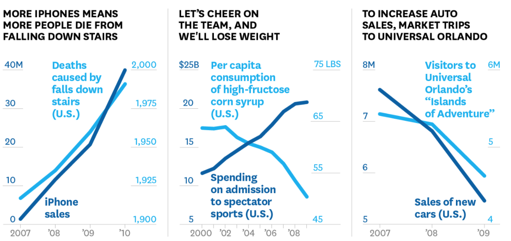
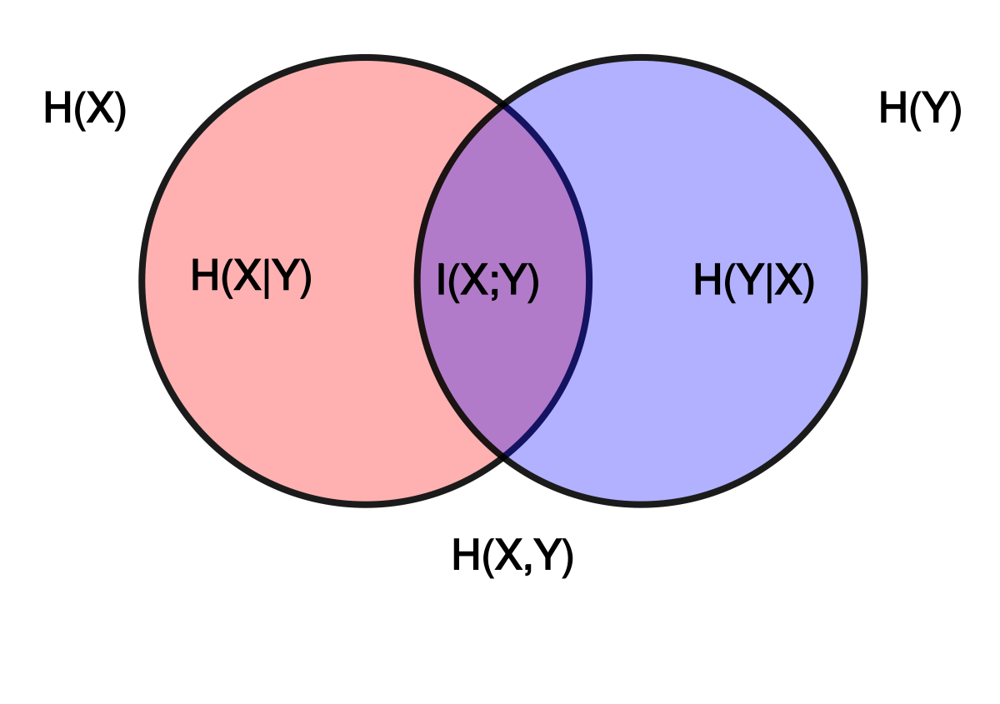

Research Projects
Abductive Concept Learning to Learn Explainable Concepts for Prediction
How can we fuse together different reasoning approaches to build interpretable models?

Source: insideIIM.com
Additive Explanation Approaches and Confounding
How well do state-of-the-art explainability approaches account for confounding and spurious correlations?

Source: tylervigen.com
Sampling in High Dimensional Spaces - The Curse of Dimensionality and Distance Metrics
How do the distance metrics used to measure locality affect state-of-the-art explanations in high dimensional feature space?

Source: phys.org
Granger Causality and Explainable AI
An information-theoretic approach to feature importance

Source: phys.org
Towards Ethical Moral Machines
Research project into modeling human moral behaviour in the autonomous vehicle domain